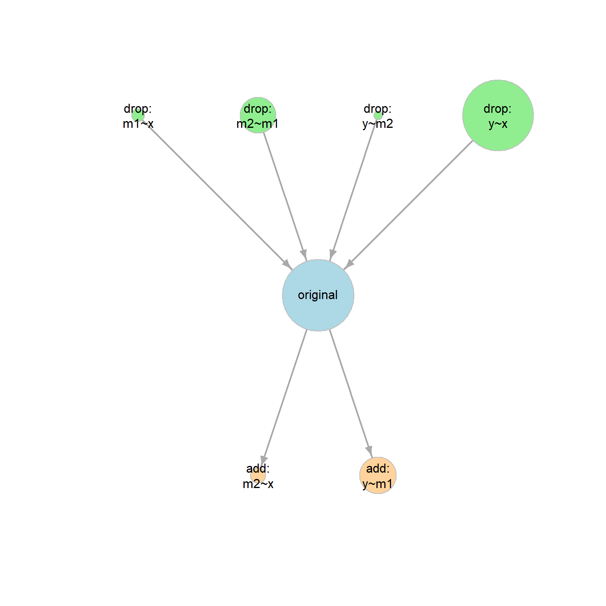
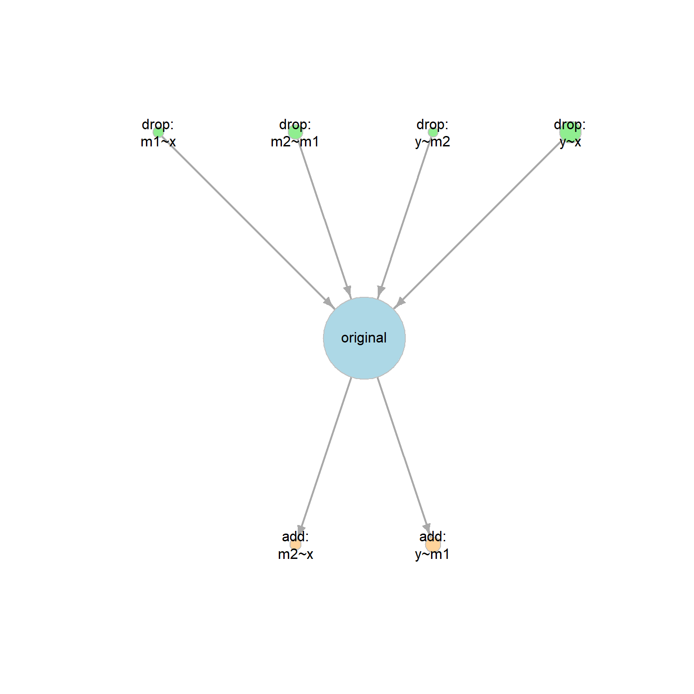
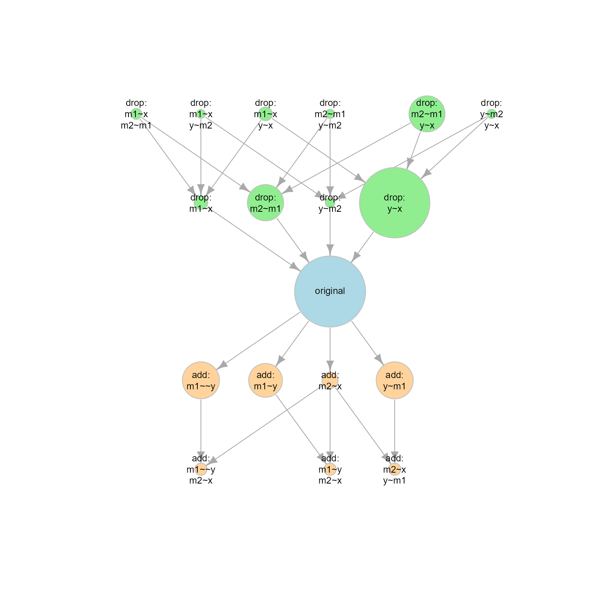
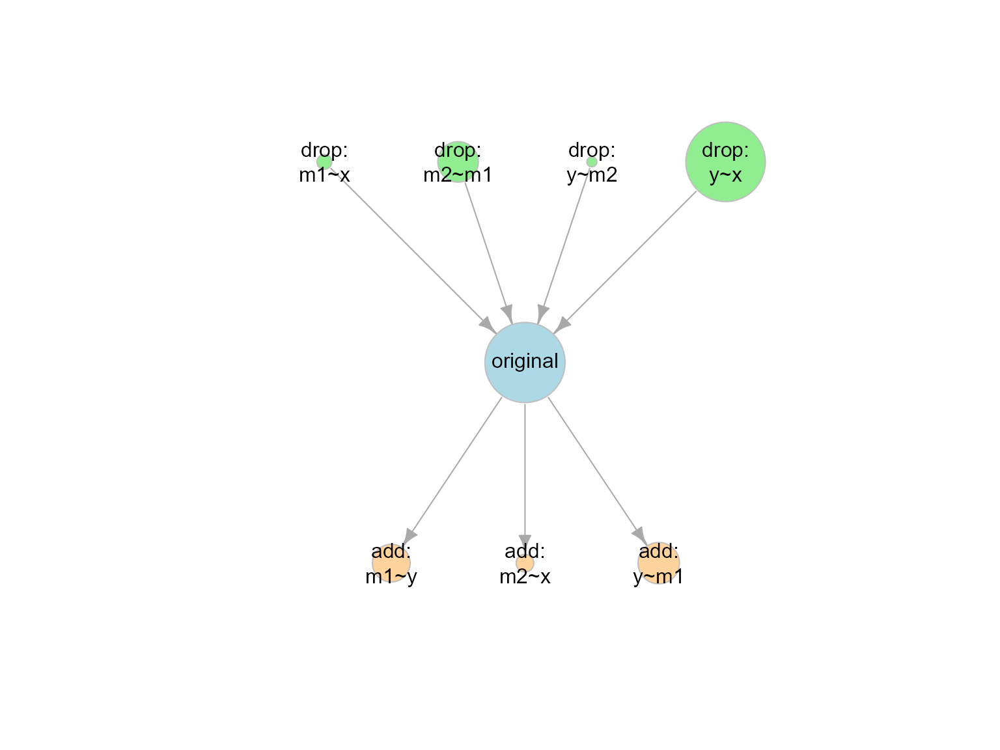

Introduction
This article illustrates how to use model_set() and
other functions from the package modelbpp
to:
Fit a set of neighboring models, each has one more or one less degree of freedom than the original fitted model.
Compute the BIC posterior probability (BPP), for each model (Wu et al., 2020).
Use BPP to assess to what extent each model is supported by the data, compared to all other models under consideration.
Workflow
Fit an SEM model, the original model, as usual in
lavaan.-
Call
model_set()on the output from Step 1. It will automatically do the following:Enumerate the neighboring models of the original model.
Fit all the models and compute their BIC posterior probabilities (BPPs).
-
Examine the results by:
printing the output of
model_set(), orgenerating a graph using
model_graph().
Example
This is a sample dataset, dat_serial_4_weak, with four
variables:
library(modelbpp)
head(dat_serial_4_weak)
#> x m1 m2 y
#> 1 0.09107195 1.2632493 0.7823926 0.3252093
#> 2 -1.96063838 -0.7745526 0.2002867 -0.6379673
#> 3 0.20184014 0.2238152 0.2374072 0.4205998
#> 4 -2.25521708 0.1185732 -0.1727878 0.9320889
#> 5 -0.15321350 0.1509888 1.1251386 0.6892537
#> 6 -2.00640303 -0.1595208 -0.1553136 -0.2364792Step 1: Fit the Original Model
Fit this original model, a serial mediation model, with one direct
path, from x to y:
library(lavaan)
#> This is lavaan 0.6-17
#> lavaan is FREE software! Please report any bugs.
mod1 <-
"
m1 ~ x
m2 ~ m1
y ~ m2 + x
"
fit1 <- sem(mod1, dat_serial_4_weak)This the summary:
summary(fit1,
fit.measures = TRUE)
#> lavaan 0.6.17 ended normally after 2 iterations
#>
#> Estimator ML
#> Optimization method NLMINB
#> Number of model parameters 7
#>
#> Number of observations 100
#>
#> Model Test User Model:
#>
#> Test statistic 3.376
#> Degrees of freedom 2
#> P-value (Chi-square) 0.185
#>
#> Model Test Baseline Model:
#>
#> Test statistic 39.011
#> Degrees of freedom 6
#> P-value 0.000
#>
#> User Model versus Baseline Model:
#>
#> Comparative Fit Index (CFI) 0.958
#> Tucker-Lewis Index (TLI) 0.875
#>
#> Loglikelihood and Information Criteria:
#>
#> Loglikelihood user model (H0) -216.042
#> Loglikelihood unrestricted model (H1) -214.354
#>
#> Akaike (AIC) 446.084
#> Bayesian (BIC) 464.320
#> Sample-size adjusted Bayesian (SABIC) 442.212
#>
#> Root Mean Square Error of Approximation:
#>
#> RMSEA 0.083
#> 90 Percent confidence interval - lower 0.000
#> 90 Percent confidence interval - upper 0.232
#> P-value H_0: RMSEA <= 0.050 0.261
#> P-value H_0: RMSEA >= 0.080 0.628
#>
#> Standardized Root Mean Square Residual:
#>
#> SRMR 0.050
#>
#> Parameter Estimates:
#>
#> Standard errors Standard
#> Information Expected
#> Information saturated (h1) model Structured
#>
#> Regressions:
#> Estimate Std.Err z-value P(>|z|)
#> m1 ~
#> x 0.187 0.059 3.189 0.001
#> m2 ~
#> m1 0.231 0.091 2.537 0.011
#> y ~
#> m2 0.341 0.089 3.835 0.000
#> x 0.113 0.052 2.188 0.029
#>
#> Variances:
#> Estimate Std.Err z-value P(>|z|)
#> .m1 0.278 0.039 7.071 0.000
#> .m2 0.254 0.036 7.071 0.000
#> .y 0.213 0.030 7.071 0.000The fit is acceptable, though the RMSEA is marginal (CFI = 0.958, RMSEA = 0.083).
Step 2: Call model_set()
Use model_set() to find the neighboring models differ
from the target model by one on model degrees of freedom, fit them, and
compute the BPPs:
out1 <- model_set(fit1)Step 3: Examine the Results
To examine the results, just print the output:
out1
#>
#> Call:
#> model_set(sem_out = fit1)
#>
#> Number of model(s) fitted : 9
#> Number of model(s) converged : 9
#> Number of model(s) passed post.check: 9
#>
#> The models (sorted by BPP):
#> model_df df_diff Prior BIC BPP Cumulative
#> original 2 0 0.111 464.320 0.253 0.253
#> drop: y~x 3 -1 0.111 464.340 0.251 0.504
#> add: m1~~y 1 1 0.111 465.900 0.115 0.619
#> add: y~m1 1 1 0.111 465.900 0.115 0.733
#> drop: m2~m1 3 -1 0.111 465.953 0.112 0.845
#> add: m1~y 1 1 0.111 466.142 0.102 0.947
#> add: m2~x 1 1 0.111 468.575 0.030 0.977
#> drop: m1~x 3 -1 0.111 469.403 0.020 0.997
#> drop: y~m2 3 -1 0.111 473.291 0.003 1.000
#>
#> Note:
#> - BIC: Bayesian Information Criterion.
#> - BPP: BIC posterior probability.
#> - model_df: Model degrees of freedom.
#> - df_diff: Difference in df compared to the original/target model.
#> - Cumulative: Cumulative BIC posterior probability.The total number of models examined, including the original model, is 9.
The BIC posterior probabilities (BPPs) suggest that the original
model is indeed the most probable model based on BPP. However, the model
with the direct path dropped, drop: y~x, only has slightly
lower BPP (0.251)
This suggests that, with equal prior probabilities (Wu et al., 2020), the support for the model with the direct and without the direct path have similar support from the data based on BPP.
Alternatively, we can use model_graph() to visualize the
BPPs and model relations graphically:
graph1 <- model_graph(out1)
plot(graph1)
Each node (circle) represents one model. The larger the BPP, the larger the node.
The arrow points from a simpler model (a model with larger model df) to a more complicated model (a model with smaller model df). If two models are connected by an arrow, then one model can be formed from another model by adding or removing one free parameter (e.g., adding or removing one path).
Repeat Step 2 with User Prior
In real studies, not all models are equally probable before having data (i.e., not all models have equal prior probabilities). A researcher fits the original model because
its prior probability is higher than other models, at least other neighboring models (otherwise, it is not worthy of collecting data assess thi original model), but
the prior probability is not so high to eliminate the need for collecting data to see how much it is supported by data.
Suppose we decide that the prior probability of the original model is .50: probable, but still needs data to decide whether it is empirically supported
This can be done by setting prior_sem_out to the desired
prior probability when calling model_set():
out1_prior <- model_set(fit1,
prior_sem_out = .50)The prior probabilities of all other models are equal. Therefore, with nine models and the prior of the target model being .50, the prior probability of the other eight model is (1 - .50) / 8 or .0625.
This is the printout:
out1_prior
#>
#> Call:
#> model_set(sem_out = fit1, prior_sem_out = 0.5)
#>
#> Number of model(s) fitted : 9
#> Number of model(s) converged : 9
#> Number of model(s) passed post.check: 9
#>
#> The models (sorted by BPP):
#> model_df df_diff Prior BIC BPP Cumulative
#> original 2 0 0.500 464.320 0.730 0.730
#> drop: y~x 3 -1 0.062 464.340 0.090 0.821
#> add: m1~~y 1 1 0.062 465.900 0.041 0.862
#> add: y~m1 1 1 0.062 465.900 0.041 0.904
#> drop: m2~m1 3 -1 0.062 465.953 0.040 0.944
#> add: m1~y 1 1 0.062 466.142 0.037 0.981
#> add: m2~x 1 1 0.062 468.575 0.011 0.992
#> drop: m1~x 3 -1 0.062 469.403 0.007 0.999
#> drop: y~m2 3 -1 0.062 473.291 0.001 1.000
#>
#> Note:
#> - BIC: Bayesian Information Criterion.
#> - BPP: BIC posterior probability.
#> - model_df: Model degrees of freedom.
#> - df_diff: Difference in df compared to the original/target model.
#> - Cumulative: Cumulative BIC posterior probability.If the prior of the target is set to .50, then, taking into account both the prior probabilities and the data, the target model is strongly supported by the data.
This is the output of model_graph():
graph1_prior <- model_graph(out1_prior)
plot(graph1_prior)
Advanced Options
More Neighboring Models
If desired, we can enumerate models “farther away” from the target model. For example, we can set the maximum difference in model df to 2, to include models having two more or two less df than the original model:
out1_df2 <- model_set(fit1,
df_change_add = 2,
df_change_drop = 2)This is the printout. By default, when there are more than 10 models, only the top 10 models on BPP will be printed:
out1_df2
#>
#> Call:
#> model_set(sem_out = fit1, df_change_add = 2, df_change_drop = 2)
#>
#> Number of model(s) fitted : 18
#> Number of model(s) converged : 18
#> Number of model(s) passed post.check: 18
#>
#> The models (sorted by BPP):
#> model_df df_diff Prior BIC BPP Cumulative
#> original 2 0 0.056 464.320 0.214 0.214
#> drop: y~x 3 -1 0.056 464.340 0.212 0.426
#> add: m1~~y 1 1 0.056 465.900 0.097 0.523
#> add: y~m1 1 1 0.056 465.900 0.097 0.620
#> drop: m2~m1 3 -1 0.056 465.953 0.095 0.714
#> drop: m2~m1;y~x 4 -2 0.056 465.973 0.094 0.808
#> add: m1~y 1 1 0.056 466.142 0.086 0.894
#> add: m2~x 1 1 0.056 468.575 0.025 0.920
#> drop: m1~x 3 -1 0.056 469.403 0.017 0.936
#> drop: m1~x;y~x 4 -2 0.056 469.423 0.017 0.953
#> add: m1~~y;m2~x 0 2 0.056 470.154 0.012 0.965
#> add: m1~y;m2~x 0 2 0.056 470.154 0.012 0.976
#> add: m2~x;y~m1 0 2 0.056 470.154 0.012 0.988
#> drop: m1~x;m2~m1 4 -2 0.056 471.036 0.007 0.995
#> drop: y~m2 3 -1 0.056 473.291 0.002 0.998
#> drop: y~m2;y~x 4 -2 0.056 474.819 0.001 0.999
#> drop: m2~m1;y~m2 4 -2 0.056 474.924 0.001 1.000
#> drop: m1~x;y~m2 4 -2 0.056 478.374 0.000 1.000
#>
#> Note:
#> - BIC: Bayesian Information Criterion.
#> - BPP: BIC posterior probability.
#> - model_df: Model degrees of freedom.
#> - df_diff: Difference in df compared to the original/target model.
#> - Cumulative: Cumulative BIC posterior probability.The number of models examined, including the original model, is 18.
This is the output of model_graph():
graph1_df2 <- model_graph(out1_df2,
node_label_size = .75)
plot(graph1_df2)
Note: Due to the number of nodes, node_label_size is
used to reduce the size of the labels.
Excluding Some Parameters From the Search
When calling model_set(), users can specify parameters
that must be excluded from the list to be added
(must_not_add), or must not be dropped
(must_not_drop).
For example, it may not make sense To add the error covariance
between m1 and y (m1~~y). We can
exclude it when calling model_set()
out1_no_cov <- model_set(fit1,
must_not_add = "m1~~y")This is the output:
out1_no_cov
#>
#> Call:
#> model_set(sem_out = fit1, must_not_add = "m1~~y")
#>
#> Number of model(s) fitted : 8
#> Number of model(s) converged : 8
#> Number of model(s) passed post.check: 8
#>
#> The models (sorted by BPP):
#> model_df df_diff Prior BIC BPP Cumulative
#> original 2 0 0.125 464.320 0.286 0.286
#> drop: y~x 3 -1 0.125 464.340 0.283 0.569
#> add: y~m1 1 1 0.125 465.900 0.130 0.699
#> drop: m2~m1 3 -1 0.125 465.953 0.126 0.825
#> add: m1~y 1 1 0.125 466.142 0.115 0.940
#> add: m2~x 1 1 0.125 468.575 0.034 0.974
#> drop: m1~x 3 -1 0.125 469.403 0.023 0.997
#> drop: y~m2 3 -1 0.125 473.291 0.003 1.000
#>
#> Note:
#> - BIC: Bayesian Information Criterion.
#> - BPP: BIC posterior probability.
#> - model_df: Model degrees of freedom.
#> - df_diff: Difference in df compared to the original/target model.
#> - Cumulative: Cumulative BIC posterior probability.The number of models reduced to 8.
This is the plot:
graph1_no_cov <- model_graph(out1_no_cov)
plot(graph1_no_cov)
Models With Constraints
If the original model has equality constraints, they will be included in the search for neighboring models, by default. That is, removing one equality constraint between two models is considered as a model with an increase of 1 df.
Recompute BPPs Without Refitting the Models
Users can examine the impact of the prior probability of the original
model without refitting the models, by using the output of
model_set() as the input, using the
model_set_out argument:
out1_new_prior <- model_set(model_set_out = out1,
prior_sem_out = .50)The results are identical to calling model_set() with
the original lavaan output as the input:
out1_new_prior
#>
#> Call:
#> model_set(model_set_out = out1, prior_sem_out = 0.5)
#>
#> Number of model(s) fitted : 9
#> Number of model(s) converged : 9
#> Number of model(s) passed post.check: 9
#>
#> The models (sorted by BPP):
#> model_df df_diff Prior BIC BPP Cumulative
#> original 2 0 0.500 464.320 0.730 0.730
#> drop: y~x 3 -1 0.062 464.340 0.090 0.821
#> add: m1~~y 1 1 0.062 465.900 0.041 0.862
#> add: y~m1 1 1 0.062 465.900 0.041 0.904
#> drop: m2~m1 3 -1 0.062 465.953 0.040 0.944
#> add: m1~y 1 1 0.062 466.142 0.037 0.981
#> add: m2~x 1 1 0.062 468.575 0.011 0.992
#> drop: m1~x 3 -1 0.062 469.403 0.007 0.999
#> drop: y~m2 3 -1 0.062 473.291 0.001 1.000
#>
#> Note:
#> - BIC: Bayesian Information Criterion.
#> - BPP: BIC posterior probability.
#> - model_df: Model degrees of freedom.
#> - df_diff: Difference in df compared to the original/target model.
#> - Cumulative: Cumulative BIC posterior probability.Many Neighboring Models
When a model has a lot of free parameters, the number of neighboring
models can be large and it will take a long time to fit all of them.
Users can enable parallel processing by setting parallel to
TRUE when calling model_set().
More Options
Please refer to the help page of model_set() for options
available.